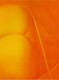
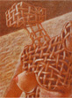
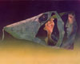

English
日本語
春口光義 年譜
1933（昭和 8）
9月30日、熊本市東坪井町32番地にて、春口藤三郎、サヨの次男として出生。二男四女、長兄は生後間もなく死亡。父44歳、母34歳。父、藤三郎は若い頃文学青年であり小説家志望であったが祖父から反対されたため下関で調理師の修行をしてその道に入る。光義の画家志望を理解し、存命中は良き応援者でもあった。
1940（昭和15）
4月 熊本市立黒髪小尋常学校入学。のち国民学校、小学校と改称される。
1946（昭和21）
3月 熊本市立黒髪小学校卒業。
4月 熊本県立中学済々黌入学。途中学制改革により併設中学校及び済々黌高等学校となる。
1949（昭和24）
4月 熊本市火の国祭り高校生美術展 優秀賞。
11月 中学3年時の作品を翌年の熊本日日新聞社主催熊日総合美術展に出品《廃駅》(6F: 31.8cm×41cm)初入選。
1950（昭和25）
4月 熊本市火の国祭り高校生美術展 優秀賞。
1951（昭和26）
4月 高校3年の時、海老原美術研究所(六軒町) が開設されて、海老原喜之助氏の指導を受ける。熊本県美術家協会展出品、《羊小屋》(10F 45.5cm×53cm)熊本市長賞。
3月 熊本済々黌高等学校卒業
1952（昭和27）
4月 京都市立美術大学(現、京都市立芸術大学)西洋画科入学。 京都美大在学中は、もっぱら芸術学研究室に出入りし、佐和隆研、龍村平蔵、木村重信氏の話を拝聴する。
1953（昭和28）
6月26日熊本大水害。国鉄通ぜず海路を経て、丁度開通したばかりの豊肥線で帰郷。復旧が大変であった。流失や汚泥で作品や、物置の貴重な品などが駄目になる。 級友後田武とともに＜デモクラート美術協会＞大阪会員となり大阪の泉茂氏宅での例会に毎回出席する。京都、岡崎の府立美術館で開催の自由美術展に出品されていた浜田知明氏の銅版画[初年兵哀歌]に衝撃を受ける。後に乙葉統氏から浜田氏が熊本の出身であることを知らされて驚く。
1955（昭和30）
夏休みで、たまたま帰郷中であった浜田知明氏を紺屋町に訪ねる。
1956（昭和31）
3月 京都市立美術大学西洋画科卒業。卒業制作に《イロケのむし》等3点を出品。優秀賞。
4月 卒業後、父母高齢のため帰熊し、熊本県立天草高等学校美術
教諭となる。天草、本渡市のレストラン（ひらの）で個展、のち依頼による3枚組キャンバスによる壁面装飾画を描く。 新制作展に出品（東京都美術館）。
1959（昭和34）
11月 熊本日日新聞社主催、熊日総合美術展 奨励賞1席（鶴屋デパート）。新制作展に出品（東京都美術館）。
1960（昭和35）
6月 熊本市立高等学校教諭となる。＜世代会＞に参加。新制作展に出品（東京都美術館）。
1961（昭和36）
6月 西崎栄美子と結婚。国際青年術展に《供物》を出品。（心理現象）をモチーフにモノクロームによる仮面のシリーズを続ける。
11月 熊本日日新聞社主催 熊日総合美術展 熊本市長賞（鶴屋デパート）。 新制作展出品（東京都美術館）。
1962（昭和37）
1月 長女誕生。第5回シエル美術賞3等賞。《架》、《Ｍｅｅｔｉｎｇ》。欧州行きを決意し、画廊喫茶（セルパン）を連絡事務所（事務局長志水破魔雄氏）とした渡欧のための春口光義後援会[熊本後援会-会長、伊豆富人氏]、[天草後援会-会長、吉見教英氏]、[熊本市立高校後援会-会長、下條靖氏]が結成され、渡欧準備に取りかかる。
熊日画廊における数回の個展(第1回10月)及び天草本渡市中央停留所二階会場にて個展。新制作展出品（東京都美術館）。
1963（昭和38）
安井賞展に出品。
8月 カナダ、モントリオールで開かれた第4回ＩＮＳＥＡ国際美術教育会議出席を機として、キリスト教国、回教国、仏教国の過去と現代の美術を見る目的で世界一周の旅に出る。8月から4ヶ月にわたり、ハワイ経由アメリカ、カナダ、イギリス、ノルウェー、スウェーデン、デンマーク、西ドイツ、オランダ、ベルギー、フランス、スペイン、スイス、オーストリア、イタリア、ギリシャ、エジプト、タイ、17カ国の主要31都市の美術館、博物館、画廊を廻り、古典美術と現代美術とを見る。日本の現代美術発言のひ弱さは、公募団体展という特異性にあることを痛感し、以降、団体展への出品をやめる。
1964（昭和39）
2月 渡欧後援会主催による帰国歓迎会。（大洋デパート）。
3月 父、藤三郎死去。
10月 大阪（あの画廊）で個展。
1965（昭和40）
6月 個展(熊本日日新聞社画廊)。
7月 次女生まれる。
1966（昭和41）
5月 母、サヨ死去。
1968（昭和43）
ウィーン造形美術大学留学を決意し、準備に取り掛かる。（留学のための後援会が結成される-- 会長下條靖氏）。
1969（昭和44）
1月 「留学のための個展」を熊本市民会館ホールで開く。
3月 熊本市立高校を退職。
4月 “Akademie der bildenden Künste im Wien”の混合技法のためのハウスナークラスに留学。Rudolf Hausner（1914-1995）第一作《対話》を制作する。10数年間のモノクロームの画面から再び色彩を使い始める。
8月 パリのアトリエの海老原喜之助師を、パリ滞在中の同郷の宮崎静夫氏とともに訪ねる。
1970（昭和45）
4月 帰国と共に九州産業大学芸術学部教員となる。
9月 海老原喜之助師がパリで客死。
1971（昭和46）
安井賞展。
9月 熊本日日新聞社画廊に於いて帰国報告展。
1972（昭和47）
5月 大阪フォルム画廊（東京、大阪、名古屋、福岡）の第3回レ・ヌフ展に混合技法による作品を発表。
6月 熊本県美術家連盟新人選抜展 (熊本日日新聞社ホール) 準賞。
1973（昭和48）
9月 大阪フォルム画廊東京店で個展を開く 次いで名古屋、大阪、福岡店で開催。
第4回 レ・ヌフ展出品(大阪フォルム画廊)。 朝日新聞主催の｢現代の幻想絵画展｣（沖縄タイムス社）に出品。
3月 九州産業大学芸術学部教員を辞す。
1974（昭和49）
安井賞展に出品。第5回 レ･ヌフ展出品(大阪フォルム画廊)。
9月 「悪夢と退廃＝終末の幻視者たち」展出品（ギャラリー銀座3番館）。
11月 ファン・アイクの作品を見るため、ウィーン、ガン、ブルージュに旅行。
1975（昭和50）
安井賞展出品。第6回 レ･ヌフ展出品(大阪フォルム画廊)。
1976（昭和51）
12月 Ｎ氏、Ｋ氏からの資金援助を受け、制作のため西独ハノーバーに11ヶ月間滞在。この間リンテルンのバート工房でブロンズ制作、ウィーンで版画制作。第7回レ･ヌフ展出品(大阪フォルム画廊)。
1977（昭和52）
第1回具象現代展招待出品（松坂屋 東京、大阪、名古屋）。‘80年同人賞、 ’83年同人佳作賞。第8回レ･ヌフ展出品(大阪フォルム画廊)。
1978（昭和53）
版画集“ＧＥＳＩＣＨＴＥＲ”（シルクスクリーン7枚組）を発刊。第1回明日への具象展招待出品（高島屋）。第2回具象現代展招待出品（松坂屋）。 第1回現代の裸婦展招待出品(日動サロン)。
1979（昭和54）
第2回現代の裸婦展招待出品(日動サロン)。第2回明日への具象展招待出品（高島屋）。第3回具象現代展招待出品（松坂屋）。熊本短期大学教養科教員となる。
1980（昭和55）
大島哲以氏らと幻視の森展。「今日のシュールレアリズム展」（ セントラル絵画館）に出品。第6回サロン･ド･アブリル展出品(日動サロン)。第3回明日への具象展招待出品（高島屋）。第3回現代の裸婦展招待出品（日動サロン）。 第4回具象現代展招待出品（松坂屋） 同人賞。
1981（昭和56）
「幻視の森展」（セントラル絵画館）に出品。第4回明日への具象展招待出品（高島屋）。第5回具象現代展招待出品（松坂屋）。第4回現代の裸婦展招待出品(日動サロン)。第7回サロン･ド・アブリル展出品(日動サロン)。
12月 「素描、水彩展 -- (男と女)」を熊本日動画廊で開く。
1982（昭和57）
3ヶ月間の海外出張、西独リンテルンに滞在。バート工房ではワックスによるブロンズ《横たわる女 -- 通りすぎる馬》を制作。ヴュルツブルグでは西独巡回（他ケルン等）中の「幻視者達」展への自作《レナーテの肖像》と再会する。ウィーンから19年ぶりのニューヨークへ飛び、京都美大以来の親友、彫刻家、児玉正美氏の家に10日間滞在。アメリカの現代美術の状況に触れる。第５回明日への具象展招待出品。(高島屋)。 第６回具象現代展招待出品。(松坂屋)。 第８回サロン・ド・アブリル展出品(日動サロン)。
1988（昭和63）
東都展出品(ギャラリー サロン・ド・ボナ)。
1989（平成 1)
3月 熊本、画廊喫茶三点鐘オープン記念企画個展。
8月26日 ニューヨーク経由ミルウォーキーへ、ウイスコンシン州立大学ミルウォーキー校に客員芸術家として1年間滞在。
1990 （平成 2)
9月3日 サンフランシスコ経由で帰国。
1991（平成 3)
東都展出品(ギャラリー サロン・ド・ボナ)。
1992（平成 4)
東都展出品(ギャラリー サロン・ド・ボナ)。
1993（平成 5)
5月 英展出品(田川市美術館)優秀賞、ウィーン、フィレンツェへの1ヶ月の旅、ウィーンでは級友達と再会する。カールフーバーと共にフォーゲル教授(ハウスナー教室の特別助手であり技法の生き字引であった)宅訪問。
1994（平成 6)
東都展出品(ギャラリー サロン・ド・ボナ)。
1995（平成 7)
2月 ハウスナー教授死去。
8月 天草、本渡市(鶴田玉文堂イベントホール) にて個展。
11月 東京銀座(ギャラリー サロン・ド・ボナ)にて個展。
1997（平成 9)
8月 ウィーン、ミラノ、ヴェニス、フィレンツェ、ジュネーブ、バーゼル、パリへ2ヶ月間の美術研修。
1998（平成10）
2月 熊本県立美術館主催「造形の冒険展」出品(熊本県立美術館本館)。
4月 熊本県美術家連盟副会長就任。
1999（平成11）
1月 ＜N･A･U =日本美術家連立展・プレ展＞出品、運営委員。
4月 熊本県美術家連盟会長岩越氏の死去にともない会長代行。
5月 ＜デモクラート1951-1957展＞出品、宮崎・和歌山・埼玉の各県立美術館巡回。
2000（平成12）
1月 第1回N･A･U展出品(東京都美術館)。
4月 熊本県美術家連盟会長就任。
8月 チューリッヒ、コルマール、ベルリンを訪ねる14日間の旅、栄美子同行。
2001（平成13）
1月 第2回N･A･U展出品(東京都美術館)。
5月 東京南青山(始弘画廊)個展。
7-9月 海外出張、ニューヨーク、シカゴ、ミルウォーキー、ロンドン、ベルリン、ウィーン、マドリッドの現代美術動向調査への旅。
2002（平成14）
1月 第3回N･A･U展出品(東京都美術館)。
2月 「九州力展」招待出品(熊本市現代美術館)。
3月 熊本学園大学社会福祉学部教授退職、名誉教授。
4月 熊本学園大学客員教授。
9月 ウィーン”GALERIE AKUM”にて個展。フォーゲル教授ご夫妻が見えられて個展を大変喜ばれた。
2003（平成15）
1月 第4回N･A･U展出品(東京都美術館)。
3月 ウィーンでリトグラフ2点の制作の後、ベルリン、パリへ。
9月 ウィーンでエッチング制作。
2004（平成16）
1月 第5回N･A･U展出品(東京都美術館)。
3月 9･11事件後のニューヨーク現代美術の変化視察のためNYに滞在し、後、児玉正美氏とプリンストン、ボストンへ同行。
3月 熊本学園大学客員教授退職。
10月 「画家再生--海老原喜之助展」の際、エビ研の一生徒として招待出品(熊本市現代美術館)。
2005（平成17）
1月 第6回N･A･U展出品(東京都美術館)。
10月 作品集『HARUGUCHI 生命、崩壊、再生』出版。
11月 「生命、崩壊、再生--春口光義の軌跡展」を熊本県立美術館分館にて開催予定。
12月 日本絵画展（韓国、昌原、慶尚南道立美術館）に出品。
2006（平成18）
1月 第7回N･A･U展出品(東京都美術館)。
2月 個展。熊本阪神百貨店美術画廊。
アジア美術展シンガポール展出品。
「ARS KUMAMOTO - 熊本力展」招待出品(熊本現代美術館)。
第41回熊本県文化懇話会賞受賞。
2007（平成19）
1月 第8回NAU展出品(東京都美術館)
ベルリン、ウィーン、バルセロナへの旅。ベルリンではDietrich Heuieis氏宅に滞在。滞在中Leipzigのベートーベン像を見に行く。
9月 NAU展出品(東京都美術館)
「ARS KUMAMOTO - 熊本力展」招待出品(熊本現代美術館)。
2008（平成20）
1月 第9回NAU熊本推薦作家展出品(熊本県立美術館)
1月 個展 画廊喫茶「六花」
NAU展出品(東京都美術館)
2009（平成21）
1月 「描く」静かなる戦い展。熊本県立美術館本館。招待出品。
ベルリン、ライプツィッヒ、ウィーン、ブラチスラバへの旅20日間。ベルリンではDietrich Heuieis氏宅に滞在。
Gerhald Habarta著"Lexikon Der Fantastischen Künstle"に収録。
NAU熊本推薦作家展出品(熊本県立美術館)
NAU展出品(東京都美術館)
2010（平成22）
6月 アジア美術展日本委員会展出品。
第1回幻想絵画ビエンナーレ(Libellule)"EXLCAMATION"に招待出品。
最初の開催地(仏ショーモン)オープニング出席を期に栄美子とパリ、ショーモン、チューリッヒ、コルマール、ローマ、ナポリ、カプリ、フランクフルト、ケルン、ハイデルベルグへの美術館巡りと観光。
2011（平成23）
3月 Fantasten Musium Wien(ウィーン幻想美術館)に作品"大きな手"が収蔵、常設展示。
4-11月 南オーストリアの古城Riegersburg城での幻想絵画展"L'ANGE EXQUIS"展に招待出品。
5月-7月 留学時代からの友人カールフーバー氏のアトリエを借りて滞在、作品制作。栄美子同行。
9月 韓国ソウル ハンガラム美術館でのアジア美術展への出品。
12月 熊本市大宝堂画廊にて「春口光義思考のはらわた」開催予定。
2012（平成24）
1月 「アジア美術展日本委員会展」（福岡市アジア美術館）出品
1月 「天草を描く」展（牛深総合センター）審査。
3月 愛する孫「春口 護」（長女 美雅の一人息子）の突然の17才での他界。強烈に心を打ちのめされた。生と死について再考させられ、制作が不可能な状態に陥る。
3月 ニューヨークの元画廊のオーナーDi Laurenti氏が岡山県の瀬戸内市にビジネスで来日。５日間の滞在中、市長室に同行したり、懸案の物件を見たりする。岡山在住の中学高校時代の親友寺尾氏とも会い、１日は観光で広島の児玉氏を呼び出し安芸の宮島へ同行する。
6月 「熊日女性絵画展」の審査。
7月 「シルバー作品展洋画部門」の審査。
10月 姫路在住の姉、まさえを訪ねる。
11月 自宅で滑り転倒し、救急車で国立病院へ。診断の結果は胸椎の圧迫骨折。ベルリンから来熊のイリス女史の見舞いを受ける。のち朝日野病院へ転院。そこでリハビリの若い担当者からペクシンスキーという東欧の画家の存在を知る。12月退院。
2013（平成25）
1月 「天草を描く」展（牛深総合センター）審査。
1月 NAU展(東京都美術館)作品14点を特別展示。
3月 10代からの友人で刎頚の友であった熊本県美術家連盟の名事務局長の雨森三郎氏が病気のため80歳で他界。
5月 13年間務めた熊本県美術家連盟の会長職を辞す。
6月 「熊日女性絵画展」の審査。
7月 杉山まさえ89歳で他界。生存中は精神面、経済面、など光義を親代わりに支えてくれていた。
9月 天草高校教諭時代の教え子、本島 豊を同行し、ウィーンへの旅。ペンション、マーラーハウスに滞在し、各美術館の古典美術や現代美術に触れる。リーゲルス城の幻想絵画コレクションを見、ハンノ氏の車でアウトバーンを8時間走行し、Neustatt an der Weinstrasseでの「アール・イマジネール展」(国際幻想美術展)を見る。会場でフランスの画家ルーカス・カンドル氏夫妻と再会。夜のパーティーでは時期がらシュトルムワイン責め。美味この上ない。夜はハンノ氏の友人宅に泊まる。
2014（平成26）
1月 NAU展(東京都美術館)に出品。
5月 「アジア美術展日本委員会」（福岡市アジア美術館）に出品。
2015（平成27）
1月 「天草を描く」展（牛深総合センター）審査。
5月 福岡市美術館にて個展「思考のはらわた展」
5月 アジア美術展日本委員会」（福岡市アジア美術館）に出品。
7月 「シルバー作品展洋画部門」の審査。
9-10月 ウィーンに３週間滞在。美術史美術館、自然史博物館、アルベルチーナ美術館、ESSL美術館を訪ねる。特に美術史美術館で多くの日と時間を過ごす。級友ハンノ・カールフーバーと彼の車でペーター・クリーチをウィーン郊外に訪ねる途中フックス美術館に立ち寄る。ヴィレンドルフ村のビーナス発掘場所を訪ねる。ウィーンではほとんど毎回ここを訪れている。美術の原点に接するのは私にとって重要だからだ。また、彼の運転で片道５時間のウィーン郊外に住む抽象画家のアトリエに行く。高地オーストリアの途中の景色も素晴らしかった。未だ尋ねていなかったグラーツの美術館を訪ねる。10月16日OS051便で帰国。成田着後、共同運行便ANA福岡行きに乗り換えのためANA待合室へ。そこで冷えたボトル入りの日本茶とサンドイッチを口にした後しばらくして下痢症状。ANAの機ちゅう、福岡〜熊本間のバスが苦痛であった。バスセンターからタクシーを拾い帰宅。下痢に混じって鮮紅の血を見る。翌日かかりつけの医院へ行き受診。「虚血性大腸炎」の疑いありとのこと。翌日からあいにくの連休。個人病院は入院不可だろうとのことで知り合いの前川医師に相談、朝日野総合病院の阿曽沼先生が引き受けてくれた。即時入院治療。ストレスが原因らしいがウィーンの強行軍が原因のようだ。21日退院。
天草美術協会70周年記念の講演会で講演。(天草市民センターホール)
2016（平成28）
1月19日 前熊本市現代美術館館長 南嶌宏氏突然の他界。
2月 NAU展(国立新美術館)に出品。
3月3日から4月10日まで、39回にわたり、熊本日日新聞"読者の広場"欄に「私を語る」を連載。
3月15日から3月25日までの間、虚血性大腸炎の為、朝日野病院に入院。
「私を語る」祝賀会が福田真君、安田賢一さんを実行委員としてホテル日航熊本２階アソシエードで開かれる。出席者各界から40名。
4月14日未明1時25分震度7.3の本震。大きな音と共に激しい揺れ。アトリエの中大型イーゼルが鳥の剥製の上に倒れ、動物の骨格標本、パソコンは机上から落下したが、多くのコードで途中にぶら下がり、スキャナー、CDラジカセ、巻きキャンバス、木枠、椅子、書籍類が吹っ飛ぶ。
5月31日 栄美子国立病院入院
6月1日 腹部2カ所の手術 6日退院、経過良好
2017（平成29）
1月30日 わが人生の大恩人であった木村重信の他界にショックを受ける。
7月22日 シルバー作品展の審査。
9月 済美展（済済黌OB展）で作品発表。県立美術館分館。
9月 パンゲア展招待出品。(山鹿市)
12月 浜田知明先生 100歳迎えられる。すこぶるお元気。
12月 済美展（済々黌OB展）（熊本県立美術館分館にて）に「ハンス・バルトウング・グリーンにささげる一生命のポット（30s）を出品。
2018（平成30）
2月 NAU展出品 （東京新国立美術館）
3月 アメリカ５０年滞在の後、故郷東広島に帰郷した京都市美大からの親友、児玉正美を訪ねる。
3月18日 孫、護の一周忌。
4月 児玉正美と共に京都市美大からの恩師であった木村重信先生のお宅（豊中市北千里）にお参りに行く。奥様、朱さんと久方ぶりにお会いする。
5月 栄美子3姉妹でのクルージング。
7月 「ウイーンで学んだ芸術家たち」展への招待出品（筑波大学アートスペース）
7月 ふらつきを感じ、朝日野病院、脳神経外科でMRIの検査を受けるが特に異常なし。
7月17日午前1時、美大2年から、亡くなられるまで、真の弟のように何かと優しく接していただいた日本にまれな不世出の芸術家、浜田知明先生が100歳7か月の生涯を閉じられた。亡くなられるまでその創作意欲が衰えられなかった。いつかこの日が来るとは覚悟していたものの茫然自失。
7月18日 通夜、午後6時
7月19日 葬儀―豊住葬斉、正午12時。厳粛で豊かさを感じる浜田先生の生き様をほうふつさせる葬儀であった。私、春口光義と元、県立美術館学芸員の井上正敏が弔辞を読む。九州産業大学の時代の教え子、二科会会員の米田君が鹿児島から来訪。美術に関する話。
7月29日 台風12号
8月14日 福岡、東横インで前泊。九産大教授の宇田川先生と会い飲酒馳走になる。
8月15日 フインランド航空でウイーンへ（ヘルシンキ経由）ウイーン空港には、ハンノの出迎え、彼の生徒の車で予定先のホテルへ。ハンノと夕食。
8月21日 ガンサート、ヘルベルト、ハンノ、ほか2名が私の歓迎会を郊外のホイリゲで開いてくれた。アカデミー留学から50年目の会合であった。光陰矢の如し。ガンサートはアカデミーの教授をしていたとのことであり翌朝、ハンノへ春口のホームページを見て衝撃を受けたと興奮した電話があったとのことであった。日本で報われない私にとってうれしい出来事であった。
8月25日 プラハへ、ハンノと一泊のバス旅行。プラハは素晴らしい街、市の会館でミュシャの大作「スラブ讃歌」全作も見ることができた。
8月28日 フイン・エアーで帰国の旅路。空港へはタクシーを使う。
8月29日 前8時、福岡空港着。バスで熊本へ。◎今度の旅は危惧していた腰の痛みが不思議に取れ、連日の美術物館などの見学も元気いっぱいに動き回ることができた。日本でのストレスも取れて、意義ある旅となった。
2019（平成31）
2月 NAU展出品「転生～男の肖像、小品3点出品（新国立新美術館）
4月 洋画講座を開講 ①初歩デッサンコース ②混合技法―古典技法講座の2講座を中央区坪井お茶の間交流センターで開く
5月1日より（令和元年）
6月 「春口光義-青春の素描展」中央区上通りのギャラリー喫茶（アーク）で開催、20代～30代の素描９８点を出品。
7月13日 浜田知明先生初盆のお参り 妻栄美子同行。
7月17日 熊本市現代美術館長 故、【桜井武氏のお別れの会】
8月 自宅の壁面塗装と修理（熊本大地震での破損）
9月30日 86歳の誕生日
9月30日 「熊本文化」（の忘れえぬ人）欄に浜田知明先生についての記事を提出。
10月 熊本市立高校勤務時代からの友人、大石正道他界、版画家秀島由己男の死を海老原研究所での先輩独立美術協会会員の江田豊の死を独立出品の磯谷精一から知らされる。
11月2日 田中憲一、地震による被災作品の修復展（御船町恐竜会館）
2020（令和2）
3月 NAU展 「愛－デジタル」を出品 （国立新美術館）
3月 CIAのIra Martin, CIA本部より30年勤続が表象される。あと6ヶ月勤務とのこと。
5月 新型コロナの助成金、全国民に一律10万円の配布。
5月 Iraさんから球磨の大水害の見舞いのメールが届く。
6月30日 栄美子8１歳の誕生日。
7月17日 浜田知明先生宅へお参り。
8月1日 シルバー展の審査（総合福祉センター）
8月6日 海老研で一緒だった松田澄夫氏の個展を見る。南区のアートスペース。
9月1日 シルバー展開催
9月6日 強烈な台風10号のため、栄美子とともに吉野家に避難。
9月7日 帰宅、被害なく安心。
9月24日 天草高校時代の教え子、松下賢蔵君８2歳で他界。
10月 小学校の同級生山下元他界を同じく同級生の森の知らせで知る。
10月10日 メル友、N,Yソーホーの元、DL画廊のオーナーMarcoから蘭の花の写真が送られてくる。これを最後に途絶し、彼の病状が心配である。
11月14日 ウイーンのハンノからメール彼の作品のオークション出品について。
11月15日 現在、ネバダ州在住のジョンから、彼の個展前の画家協会会長との対談の動画をフェースブックで見てくれとのメールあり。
{kind=link}